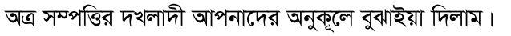
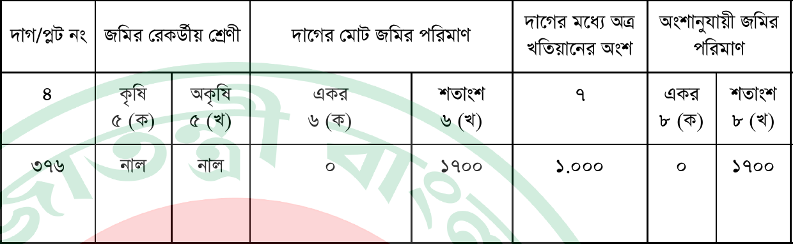
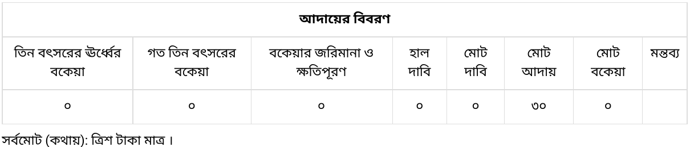
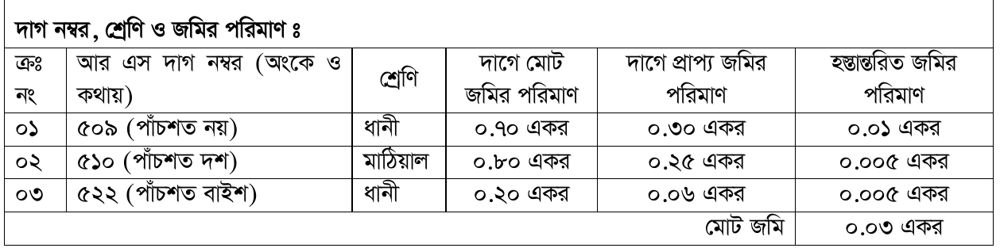

বাস্তব কাগজ পড়ুন
প্রথমবার হলে খতিয়ান দিয়ে শুরু করুন। ছবি ছুঁলে বড় হবে। খতিয়ান ও দাখিলা আলাদা জমির কাগজ। ব্যক্তিগত পরিচয়ের ঘরগুলো ছবির বাইরে রাখা হয়েছে।
- দলিলের বাক্য নিজের ভাষায় পড়ুন
- নামজারি খতিয়ানে দাগের অংশ
- দাখিলায় দাবির পাশে আদায়
- কবলা দলিলের তফসিলে তিন দাগের হিসাব
- এক মামলায় খতিয়ান ও রসিদ যেভাবে পড়া হয়েছে
দলিলের বাক্য নিজের ভাষায় পড়ুন
একটি বিক্রয় দলিল হাতে নিলে প্রথম পাতায় দাতা আর গ্রহীতার নাম খুঁজুন। বিক্রয়ের ক্ষেত্রে দাতা হলেন বিক্রেতা, গ্রহীতা হলেন ক্রেতা। তারপর একটি বাক্য নিয়ে দেখুন কে বলছেন, কাকে বলছেন, কোন জমির কথা বলছেন আর কী করেছেন বলে লিখছেন।
বিক্রেতার একটি বাক্য
ভেড়ামারা সাব-রেজিস্ট্রি অফিসের পূরণকৃত কবলা দলিলের নমুনা। দ্বিতীয় পাতায় ‘হস্তান্তরের উদ্দেশ্য’ অংশের শেষ বাক্যটি পড়ুন।

বাক্যটি বড় অক্ষরে পড়ুন
অত্র সম্পত্তির দখলাদী আপনাদের অনুকূলে বুঝাইয়া দিলাম।
অত্র সম্পত্তির
এই দলিলে যে জমির কথা বলা হয়েছে, সেই জমির। কোন জমি আর কতটুকু, জানতে তফসিলে মৌজা, দাগ ও হস্তান্তরের পরিমাণ দেখুন।
দখলাদী
এখানে জমির দখলের কথা বলা হচ্ছে। জমিটি বাস্তবে কার ব্যবহারে আছে, তা জানতে সরেজমিনে খোঁজ নিতে হবে।
আপনাদের অনুকূলে
আপনাদের কাছে। বিক্রেতা এখানে ক্রেতাকে সম্বোধন করছেন। ‘আপনাদের’ কারা, তা গ্রহীতার ঘরে মিলিয়ে নিন।
বুঝাইয়া দিলাম
বুঝিয়ে দিলাম। এই বাক্যে তার মানে দখল হস্তান্তর করলাম। ‘দিলাম’ ক্রিয়াটি দেখে বুঝবেন বক্তা নিজের কাজের কথা বলছেন।
পুরো বাক্য মিলিয়ে দেখি
বিক্রেতা লিখছেন, ‘এই জমির দখল আপনাদের বুঝিয়ে দিলাম।’ এটুকু পড়ে বলা যায় দলিলে দখল দেওয়ার কথা আছে। ঠিক কোন অংশ দেখিয়ে দেওয়া হয়েছিল, তা এই বাক্যে লেখা নেই।
এবার আগের মালিক খুঁজুন
একই পাতার ৭ নম্বর অংশে প্রথম তফসিলের মালিকানার বিবরণ পড়ুন। সেখানে পরপর কলিম উদ্দিন, জামাল উদ্দিন ও বর্তমান দলিলদাতার কথা আছে। ‘তাহার নিকট হইতে’ মানে ‘তাঁর কাছ থেকে’। ‘তাঁর’ বলতে কাকে বোঝানো হয়েছে? ৫৪৯১ নম্বর দলিল ধরে খাতায় লিখুন কে কার কাছ থেকে জমি পাওয়ার কথা বলছেন।
নিজের উত্তর লেখার পর দেখুন
বর্তমান দলিলদাতা লিখছেন যে তিনি জামাল উদ্দিনের কাছ থেকে ৫৪৯১ নম্বর দলিলমূলে জমি পেয়েছেন। আগের বাক্যে জামালের নাম আছে। কলিম উদ্দিনের নাম আরও আগে, আর.এস. রেকর্ডের বর্ণনায়। এই ইতিহাস যাচাই করতে ৫৪৯১ নম্বর দলিলের পক্ষ ও তফসিল মেলাতে হবে।
খতিয়ান আর দাখিলার ঘরও বাক্যের মতো পড়ুন
খতিয়ান। ‘অংশানুযায়ী জমির পরিমাণ’কে ভাঙুন ‘অংশ অনুযায়ী’ + ‘কত জমি’। পুরো দাগ ২৪ শতক আর এই খতিয়ানের অংশ অর্ধেক হলে এই ঘরে কত শতক আশা করবেন?
খতিয়ানের হিসাব মিলিয়ে দেখি
১২ শতক। পুরো দাগের পরিমাণ বলছে ২৪। এই খতিয়ানের অংশ বলছে অর্ধেক। দুই ঘর একসঙ্গে পড়লে ১২-এর অর্থ বোঝা যায়। এটি অনুশীলনের হিসাব।
দাখিলা। ‘হাল দাবি’ মানে চলতি সময়ের করের দাবি। ‘মোট আদায়’ মানে রসিদে যত টাকা নেওয়ার হিসাব আছে। আগের বকেয়াসহ টাকা দিলে কত টাকা দেওয়া হলো জানতে কোন ঘর পড়বেন?
দাখিলার ঘর মিলিয়ে দেখি
মোট আদায়। পুরোনো বকেয়া ও হাল দাবির ঘর দেখে নেওয়া টাকার হিসাবটি মিলিয়ে পড়ুন।
নগদে পরিশোধের কথা কত টাকার?
ভেড়ামারার কবলার প্রথম পাতায় দামের দুই সারি যোগ করুন। ছাপা মোট লিখুন। এবার ৩ পৃষ্ঠার ১৪ নম্বর অংশে কত টাকা পরিশোধের কথা আছে লিখুন। তিনটি অঙ্ক থেকে কী বলতে পারেন? কোন তথ্যের জন্য অন্য প্রমাণ লাগবে?
দলিলের ঘরগুলি লেখায় পড়ুন
পৃষ্ঠা ১ · মূল্য। প্রথম সারি ১,০০,০০০ টাকা। দ্বিতীয় সারি ৮৪,০০০ টাকা। ছাপা মোট ২,৮৪,০০০ টাকা। পৃষ্ঠা ৩ · ১৪ নম্বর অংশে ২,৮৪,০০০ টাকা নগদে পরিশোধের কথা লেখা।
হিসাব ও ব্যাখ্যা দেখুন
প্রথম পাতার দুই সারির দাম ১,০০,০০০ ও ৮৪,০০০ টাকা। যোগফল ১,৮৪,০০০। ছাপা মোট ২,৮৪,০০০, এক লাখ টাকা বেশি। ৩ পৃষ্ঠার ১৪ নম্বরেও ২,৮৪,০০০ টাকা নগদে পরিশোধের কথা লেখা। একই অঙ্ক দুবার লেখা থাকলেও কোন অঙ্কে লেনদেন হয়েছিল তা জানা গেল না। বাস্তব খসড়ায় সম্মত দাম ও পরিশোধের প্রমাণ মিলিয়ে অমিল মেটাতে হবে।
নামজারি খতিয়ানে দাগের অংশ
ভূমি উন্নয়ন কর সেবায় পাওয়া ২০২২ সালের অনুমোদিত নামজারি খতিয়ান। নিচে ৫৪৬২ ফরমের ৪ থেকে ৮ নম্বর ঘর ও কথায় লেখা পরিমাণ দেখানো হয়েছে।

ছবির লেখা পড়ুন
দাগ ৩৭৬। ৬(ক) ও ৬(খ) ঘরে ০ ও ১৭০০। ৭ নম্বর ঘরে ১.০০০। ৮(ক) ও ৮(খ) ঘরেও ০ ও ১৭০০। নিচে কথায় লেখা আছে ‘সতের শতক ভূমি মাত্র’।
নিজে দেখুন। এই খতিয়ানে ৩৭৬ দাগের কত শতক উঠেছে? কোন দুটি জায়গা দেখে আপনার উত্তর মিলাবেন?
উত্তর মিলিয়ে দেখুন
১৭ শতক। ৭ নম্বর ঘরে পুরো অংশ (১.০০০), তাই ৬ ও ৮ নম্বর ঘরের পরিমাণ সমান। সংখ্যার ঘরে ‘১৭০০’ দেখে থেমে যাবেন না। এই কপির নিচে কথায় ‘সতের শতক’ লেখা আছে। অন্য কপিতে ঘরের একক ও কথায় লেখা পরিমাণ আবার মিলিয়ে পড়ুন।
দাখিলায় দাবির পাশে আদায়
ভূমি উন্নয়ন কর সেবায় পাওয়া ৫ ফেব্রুয়ারি ২০২৫ তারিখের দাখিলা। ১০৭৭ ফরমের ‘আদায়ের বিবরণ’ অংশ।

ছবির লেখা পড়ুন
হাল দাবি ০, মোট দাবি ০, মোট আদায় ৩০, মোট বকেয়া ০। পরের লাইনে কথায় ত্রিশ টাকা লেখা।
নিজে দেখুন। কেউ বললেন, ‘মোট দাবি শূন্য, তাই কোনো টাকা আদায় হয়নি।’ রসিদের কোন দুই জায়গা দেখে উত্তর দেবেন?
উত্তর মিলিয়ে দেখুন
‘মোট আদায়’ ঘরে ৩০, তার নিচে কথায় ত্রিশ টাকা। এই রসিদে ৩০ টাকা আদায় দেখানো হয়েছে। মোট দাবি শূন্য হয়েও কেন ৩০ টাকা আদায় দেখানো হয়েছে, তার ব্যাখ্যা এই অংশে নেই। কারণ জানতে সংশ্লিষ্ট হোল্ডিংয়ের করের হিসাব দেখতে হবে।
কবলা দলিলের তফসিলে তিন দাগের হিসাব
ভেড়ামারা সাব-রেজিস্ট্রি অফিসের প্রকাশিত পূরণকৃত নমুনা, পৃষ্ঠা ৩, দ্বিতীয় তফসিল। এটি দলিল লেখার উদাহরণ। তফসিল মানে এখানে কোন জমি কতটুকু হস্তান্তরের কথা বলা হয়েছে, তার বিবরণ।

ছবির লেখা পড়ুন
৫০৯ দাগে মোট ০.৭০, প্রাপ্য ০.৩০, হস্তান্তরিত ০.০১ একর। ৫১০ ও ৫২২ দাগে হস্তান্তরিত ০.০০৫ একর করে। ছাপা মোট ০.০৩ একর।
সাব-রেজিস্ট্রি অফিসের পূরণকৃত নমুনা
নিজে দেখুন। ৫০৯ দাগে কতটুকু বিক্রির কথা আছে? এবার শুধু ‘হস্তান্তরিত জমির পরিমাণ’ ঘরের তিনটি সংখ্যা যোগ করুন। নিচের মোটের সঙ্গে কতটুকু ফারাক?
উত্তর মিলিয়ে দেখুন
৫০৯ দাগে ০.০১ একর। তিন সারি যোগ করলে ০.০১ + ০.০০৫ + ০.০০৫ = ০.০২ একর। ছাপা মোট ০.০৩ একর, ফারাক ০.০১ একর বা ১ শতক। কোন সংখ্যা ঠিক তা এই তফসিল থেকে একা বলা যায় না। বাস্তব খসড়ায় এমন অমিল পেলে সইয়ের আগে সংশ্লিষ্ট দাগের পরিমাণ ও মোট মিলিয়ে সংশোধন চাইবেন।
এক মামলায় খতিয়ান ও রসিদ যেভাবে পড়া হয়েছে
বাংলাদেশ সুপ্রিম কোর্ট, হাইকোর্ট বিভাগ। সিভিল রিভিশন ১৫৫১/২০০৮। নিচে রায়ের ১০–১১ পৃষ্ঠার বাংলা সারাংশ। ‘Exhibit’ মানে মামলায় প্রমাণ হিসেবে চিহ্নিত কাগজ।
পৃষ্ঠা ১০-এ Exhibit-2 হলো ২৪ মে ১৯৯৭-এর নামজারি খতিয়ান। Exhibit-1 হলো ৮ জুন ২০০১-এর খাজনার রসিদ। দুটিই একই ব্যক্তির নামে ০.১৯ একর জমির জন্য। বিবাদীর নিজের নামজারির আদেশ ২১ ডিসেম্বর ২০০৩-এর, মামলা হওয়ার পরে। পৃষ্ঠা ১১-তে পৌরসভার হোল্ডিং করের রসিদের কথাও আছে।
নিজে দেখুন। বিবাদী বলেছিলেন, তিনি মৌখিক দানে জমি পেয়েছেন। তাঁর পরের নামজারিতে তিনি কোন সূত্রে জমি দাবি করেছিলেন? পৃষ্ঠা ১০-এ ‘son and heir’ কথাটি খুঁজুন।
উত্তর মিলিয়ে দেখুন
নামজারির সময় তিনি নিজেকে পুত্র ও ওয়ারিশ বলে পরিচয় দিয়েছিলেন। আদালত এই পরিচয়কে মিথ্যা বলে চিহ্নিত করে। আদালত তাঁর দানের দাবি, নামজারির সময় ও দাবির ভিত্তি পাশাপাশি বিচার করে। পৃষ্ঠা ১১-তে আদালত ব্যাখ্যা করে কেন কর দেওয়া বা নামজারি এই বিবাদীর স্বত্ব প্রতিষ্ঠা করেনি।
অন্য দাখিলা দিয়ে নিজে চেষ্টা করুন · এক মামলার কাগজ মিলিয়ে দেখুন